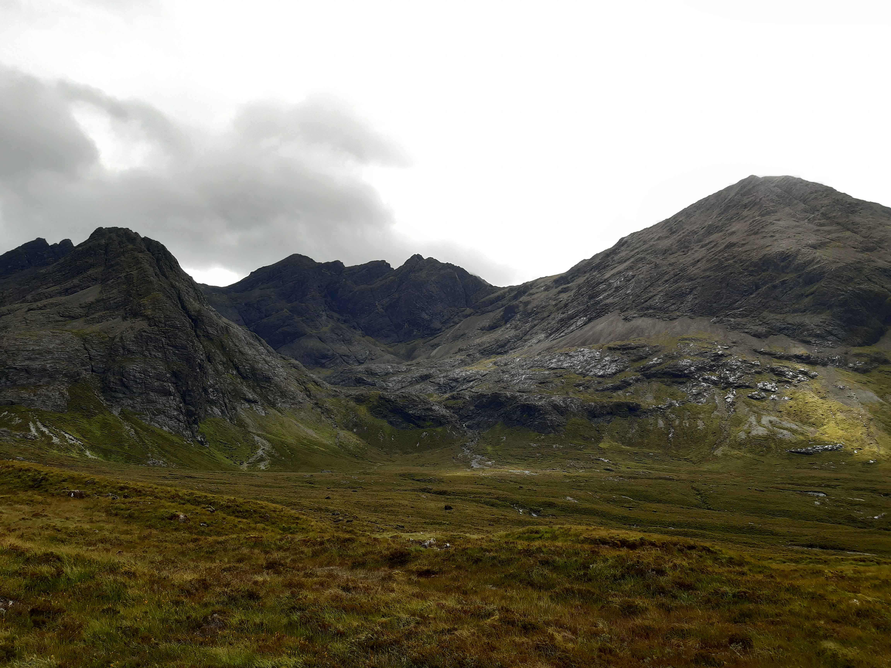
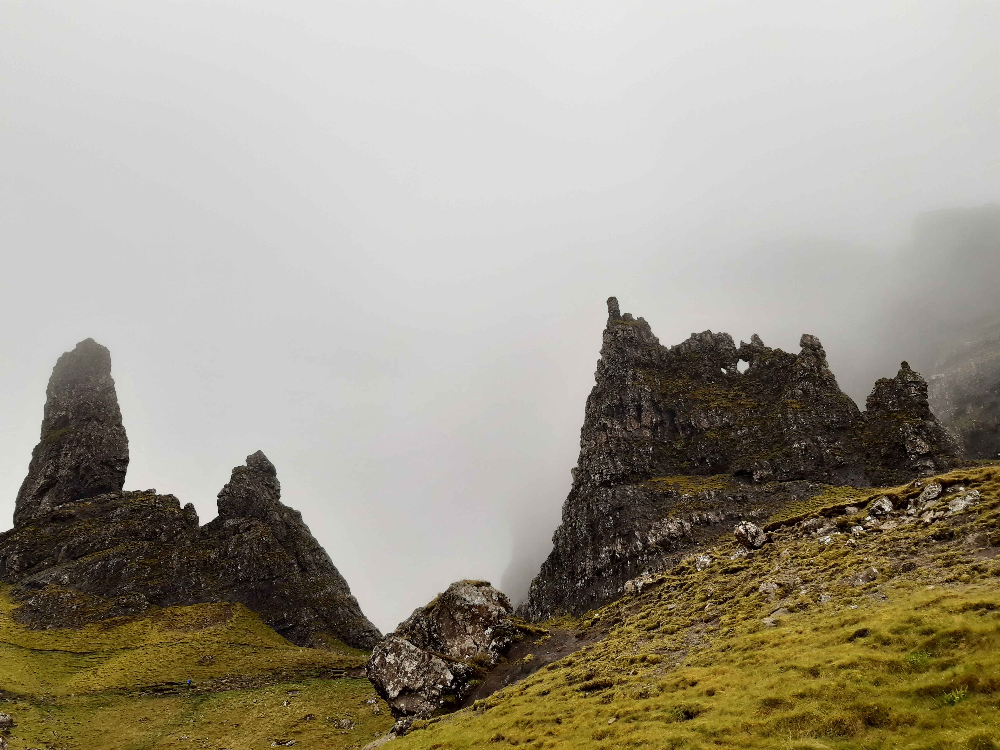
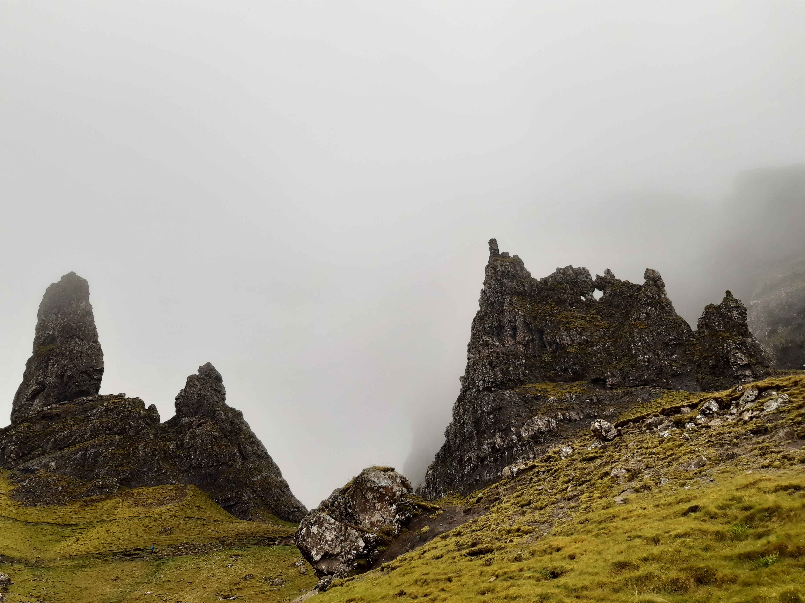

Retour
Île de Skye
Beinn na Caillich
- Type : boucle
- Description de l'itinéraire : Allt A'choire - Beinn na Caillich - Beinn Dearg Mhor - Beinn Dearg Bheag
- Distance : 9 km
- Dénivelé positif : 1000 m
- Point le plus bas : 24 m
- Point le plus haut : 732 m
- Cotation en l'absence de neige : T4
- Intérêt : 4/5
- Date : 4/8/2021
- Photos :
 Le Cuillin
Le Cuillin
Fairy Pools
- Type : boucle
- Description de l'itinéraire : parking de Fairy Pools - Fairy Pools - Allt Mor An Fhinn Choire
- Distance : 8 km
- Dénivelé positif : 400 m
- Point le plus bas : 63 m
- Point le plus haut : 375 m
- Cotation en l'absence de neige : T3
- Intérêt : 3/5
- Date : 5/8/2021
- Photos :
 Le Cuillin
Les Fairy Pools
Fingal's Pinnacles et le Quiraing
- Type : aller simple
- Description de l'itinéraire : loch Langaig - parking du Quiraing
- Distance : 5 km
- Dénivelé positif : 400 m
- Point le plus bas : 100 m
- Point le plus haut : 350 m
- Cotation en l'absence de neige : T3
- Intérêt : 5/5
- Date : 6/8/2021
- Photos :
 Fingal's Pinnacles
Fingal's Pinnacles
 Le Quiraing
Le Quiraing
Old Man of Storr
- Type : boucle
- Description de l'itinéraire : parking de Storr - Old Man of Storr - Needle Rock
- Distance : 5 km
- Dénivelé positif : 300 m
- Point le plus bas : 223 m
- Point le plus haut : 525 m
- Cotation en l'absence de neige : T2
- Intérêt : 4/5
- Date : 7/8/2021
- Photos :
 The Old Man of Storr
 The Old Man of Storr et Needle Rock
The Old Man of Storr
 The Old Man of Storr et Needle Rock